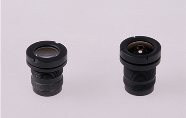
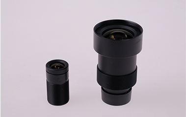
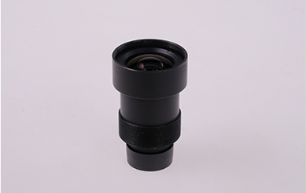
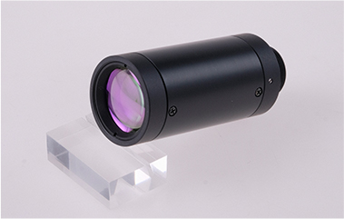
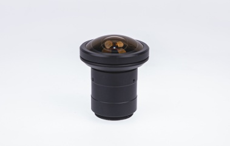
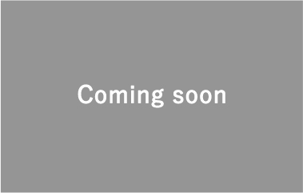

高解像度固定焦点レンズ
「周辺までの高解像度を確保」「周辺まで光量を落とさない」という2つの条件をクリアするだけでなく、コンパクトなサイズで仕上げました。
OEM PRODUCTION
当社はOEM製作において、長年の経験により培った知識・技術力をいかんなく発揮します。これまで様々な困難や課題を克服することで、他では達成できない依頼を叶えてきました。その領域は幅広く、可視光レンズに限らず、赤外光対応レンズまで製作可能です。国内外の繋がりを活かし、高品質かつ競争力のある価格で製品を提供することをお約束します。
これまで当社が製作したOEM製品をご紹介いたします。参考にご覧ください。

「周辺までの高解像度を確保」「周辺まで光量を落とさない」という2つの条件をクリアするだけでなく、コンパクトなサイズで仕上げました。

決まった被写体距離（200～600mm）の間で、ディストーションを少なくし、均一化も達成しました。

材料が特殊なため加工・処理は困難ですが、量産に成功しました。

可視光領域レンズだけではなく、赤外光源（1,000～2,000nm）でのレンズ設計も行いました。

周辺まで高解像度を確保し、さらに周辺まで光量を落とすことのない設計に仕上げました。こちらはfθ特性歪曲設計です。

長焦点（f1,200mm）でありながら、コンパクトなサイズで仕上げました。こちらはCatadioptric lensとなります。
お問い合わせいただいてから、製品のお引き渡しまでの流れをご案内いたします。
お電話またはメールフォームよりお問い合わせください。詳細なお見積りが必要な場合は、事前に検討されている仕様の情報をご準備ください。
お問い合わせいただきましたら、数営業日以内に担当者よりご連絡いたします。その後、製品の仕様について打ち合わせを実施します。
打ち合わせの後、改めて担当者より製作可否やお見積りについてご連絡いたします。
お見積り内容にご了承いただけましたらご契約となります。契約締結後、製作の手配を開始いたします。
試作を行い、問題がない場合は生産に移行します。製品の生産後は、社内で各種検査と品質確認を実施します。
検査終了次第、厳重に梱包し、お客様のもとへ納品いたします。海外発送等の場合は別途ご相談ください。
（C）2026 株式会社AMS